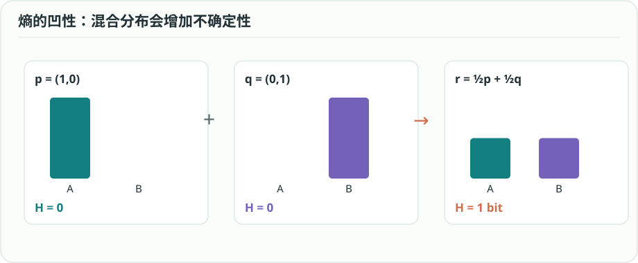
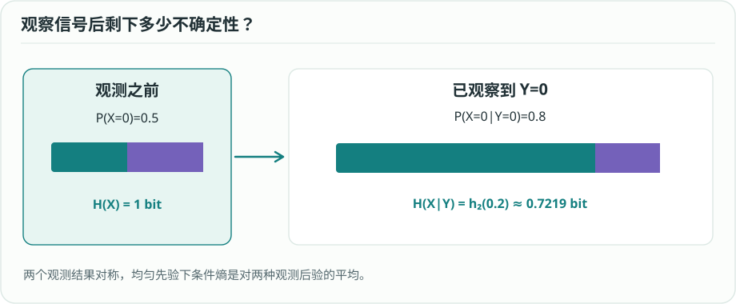
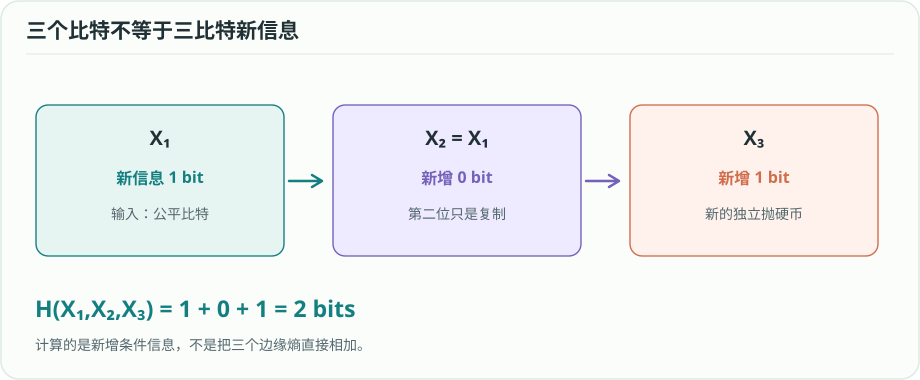

为什么知道了更多，反而可能觉得更不确定？
设一枚公平硬币 X：在观察任何其他信息之前，H(X)=1 bit。现在看到观测 Y；若 Y 通常正确地报告 X，只是偶尔出错，平均而言我们对 X 的不确定性会减少。但某个罕见观测也可能恰好把概率推向 1/2，使那次特定观测后的熵比先验更高。
这两个描述不矛盾：“条件作用不增熵”比较的是对 Y 的所有可能值加权平均得到的 H(X|Y)，而不是把每个单独的 H(X|Y=y) 都拿来逐点比较。
从 KL 非负推出熵的上界
对 M 个可能符号，所有概率 pᵢ 都非负且求和为 1。令 uᵢ=1/M 为均匀分布，则 D(p∥u)=log₂M−H(p)≥0，所以 H(p)≤log₂M。由于每一项 −pᵢlog₂pᵢ 非负，H(p)≥0。
当且仅当信源确定某个结果时，熵为 0；若 M 个符号均有可能，最大熵 log₂M 在完全均匀时取得。比如 M=3 的上界是 log₂3≈1.585 bits，并不是“至少有 3 个二进制位”。
凹性：分布混合通常让结果更难预测
设 p=(1,0)、q=(0,1)，二者各自是确定性分布，熵都是 0。如果发送者先随机选择采用哪一个分布，但接收者不知道这次选择，接收者实际看到的混合边缘分布为 r=½p+½q=(½,½)，熵变为 1 bit。

这里 0≤λ≤1。可通过 KL 非负或函数 −tlog t 的凹性证明。这一点不表示“平均两个样本值后熵必增加”；混合概率分布与对随机变量做数值平均是不同操作。
条件熵与互信息的代数关系
从链式法则 H(X,Y)=H(Y)+H(X|Y)，再写成互信息 I(X;Y)=H(X)−H(X|Y)，因为离散变量的互信息非负，可知 H(X|Y)≤H(X)。等号恰好对应 X 与 Y 相互独立（在正则的有限离散情形）。

可尝试构造反例否定“每个 y 都使熵下降”：先验 P(X=1)=0.1；观察到某个罕见 Y=y 时，后验恰好变为 (0.5,0.5)。该次条件熵 1 bit 大于先验 h₂(0.1)≈0.469 bit；只要其他结果使不确定性降得足够多，总体条件熵仍符合不等式。
X 均匀，Y=X⊕Z，Z 独立且服从伯努利(ε)；此时平均条件熵等于 h₂(ε)。
链式法则：每个新变量增加多少信息？
对任意有限离散变量序列，不管彼此是否独立，联合熵都可按条件信息逐项拆开。
第一项在 i=1 时没有条件，定义为 H(X₁)。独立时条件项等于边缘熵，联合熵才等于各项简单相加。

由此推出次可加性 H(X,Y)≤H(X)+H(Y)。等号在独立时成立。它也说明，冗余不是“有很多数据位”，而是“新观察几乎不能再减少多少不确定性”。
最大熵原理：要先写清楚约束
只知道有限字母表大小 M 且没有其他约束时，均匀分布最大化熵。若还指定平均能量 ∑pᵢEᵢ=Ē，通过拉格朗日乘子可以推得指数型的 Gibbs 分布 pᵢ∝exp(−βEᵢ)，β 由平均能量约束确定；若温度或能量约束发生改变，答案会不同。
若改为连续密度并指定均值与方差，在适当正则条件下，正态分布使微分熵最大。但是中心极限定理并不是由最大熵原理直接推出：中心极限定理陈述独立变量经适当归一化后的分布收敛，需要独立性、方差等条件，两者的逻辑命题不同。
最小计算与检查
以下实验同时验证最大熵、条件熵和链式法则的一个确定性例子。它不能代替不等式的普遍证明；证明仍需要 KL 非负或熵的凹性。
from math import log2
def H(ps):
return -sum(p*log2(p) for p in ps if p)
assert H([.5,.5]) == 1
assert H([1,0]) == 0
assert abs(H([.8,.2]) - .721928094887) < 1e-10
# X1 公平、X2=X1、X3 独立且公平：联合熵 = 2
assert H([.25]*4) == 2
print("熵的单调性、条件熵算例与联合熵验证完毕")下一步将把单符号的不确定性推广到一整段随机序列：当独立样本数变大时，每个样本的平均惊讶程度如何稳定？
来源与延伸阅读
- Cover & Thomas, Elements of Information Theory (2nd ed.)，第 2、12 章；基础熵不等式与最大熵问题。
- MIT 6.441 (2016) 公开讲义：信息量、条件熵与极值性质。
- Stanford EE376A 课程资料：熵与源编码的基础论证。